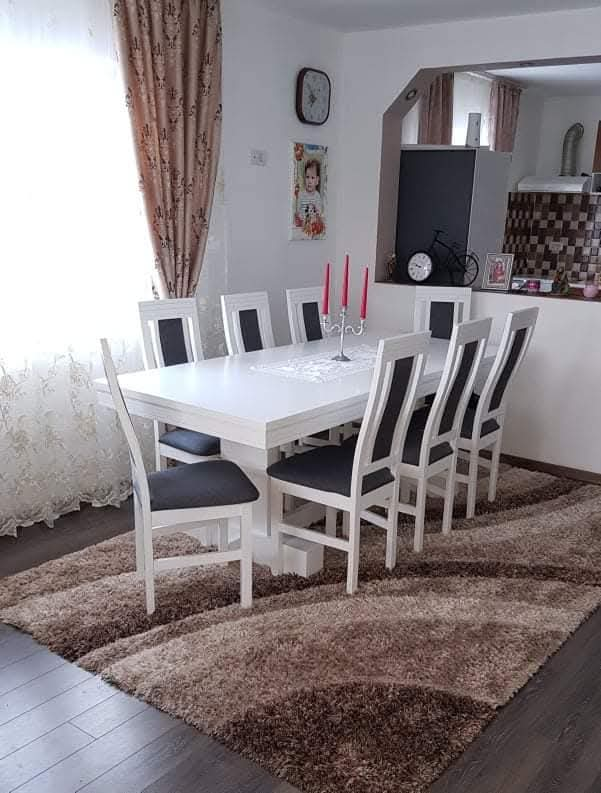
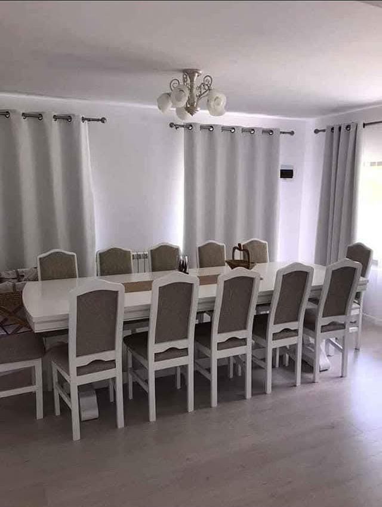
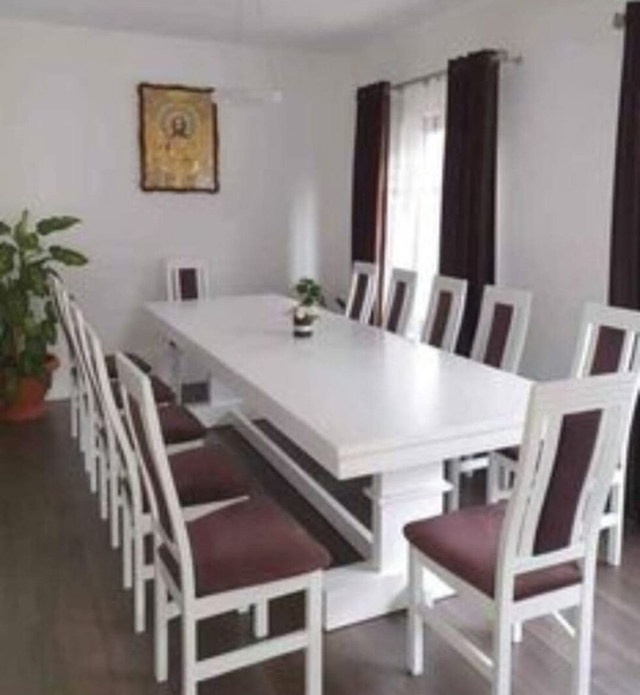
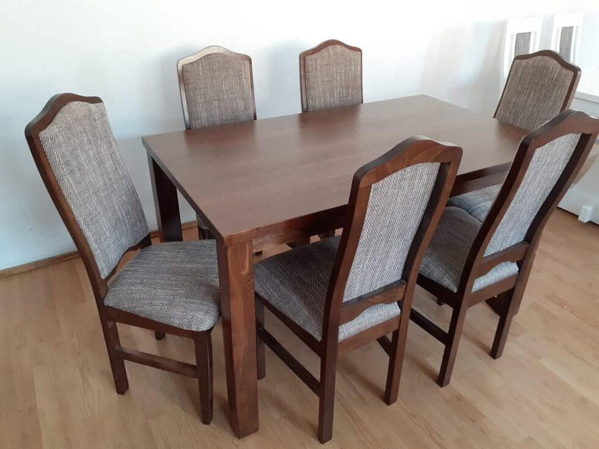
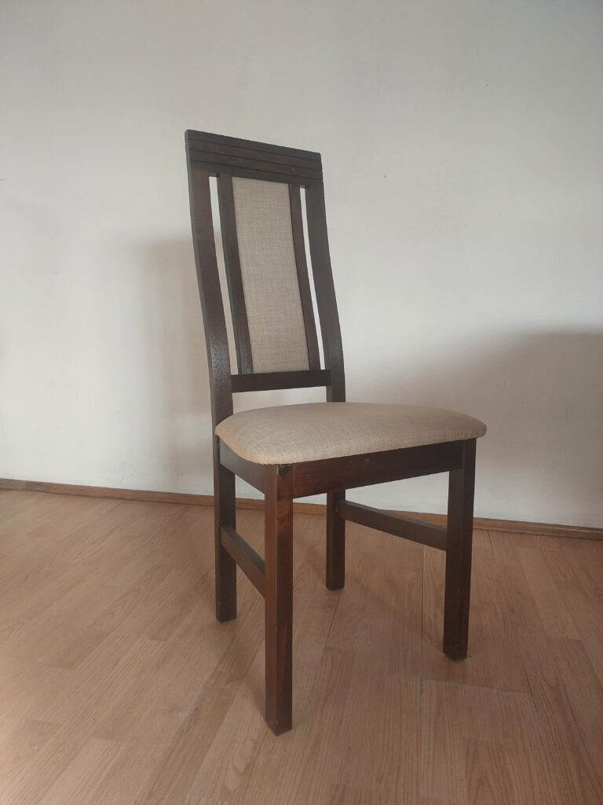
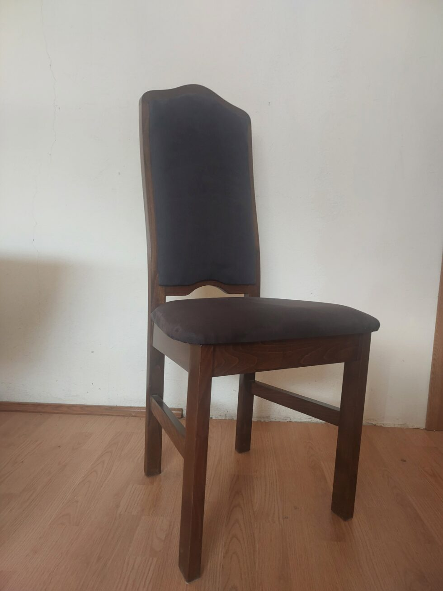

Global Ada SRL
Înființată în anul 2000 ca un mic atelier de tâmplărie, SC GLOBAL ADA SRL a evoluat constant datorită ambiției și dorinței de a ne dezvolta. Prin seriozitate, promptitudine, calitate și profesionalism, am reușit să ne dotăm cu toate tipurile de utilaje necesare procesului de fabricație a meselor și scaunelor.
În prezent, producem două modele de scaune din lemn de fag, care pot fi finisate conform cerințelor clienților în culorile alb, negru, wenge, stejar sau nuc. De asemenea, oferim mese cu blat neextensibil, disponibil în dimensiuni variind din 20 în 20cm, începând de la 1,20m și atingând până la 3m.
Blatul meselor este fabricat din PAL de 34mm, bordurat cu lemn masiv și acoperit cu furnir natural de stejar, aplicat în presă caldă.
La noi aveți posibilitatea de a personaliza produsul comandat, selectând culoarea lemnului, a tapițeriei și dimensiunea blatului de masă conform preferințelor dumneavoastră.
Seturile noastre de masă și scaune sunt alegerea perfectă pentru a aduce un strop de eleganță și confort în orice spațiu.
Cu un design modern și linii curate, acest set transformă mesele cu familia sau prietenii în momente memorabile.
Fie că este vorba de o cină în familie sau de o întâlnire cu prietenii, confortul scaunelor și stilul mesei vor crea o atmosferă plăcută și primitoare.


Mese
Mesele cu blat neextensibil, disponibile în dimensiuni între 1,20m și 3m, au blat din PAL de 34mm, bordurat cu lemn masiv și acoperit cu furnir natural de stejar aplicat la presă caldă.
Masa Carina cu scaun Cami
Mesele au înălțimea de 78 cm, iar dimensiunile de lungime și lățime sunt conform tabelului.
| Lungime | Lățime |
|---|---|
| 1.60m | 0.80m |
| 1.80m | 0.90m |
| 2.0m | 0.90m |
| 2.2m | 1.00m |
| 2.4m | 1.00m |
| 2.6m | 1.00m |
| 2.8m | 1.00m |
| 3.0m | 1.00m |

Masa Daria cu scaun Georgiana
Mesele au înălțimea de 78 cm, iar dimensiunile de lungime și lățime sunt conform tabelului.
| Lungime | Lățime |
|---|---|
| 1.60m | 0.80m |
| 1.80m | 0.90m |
| 2.0m | 0.90m |
| 2.2m | 1.00m |
| 2.4m | 1.00m |
| 2.6m | 1.00m |
| 2.8m | 1.00m |
| 3.0m | 1.00m |
Masa Ada cu scaune Georgiana
Mesele au înălțimea de 78 cm, iar dimensiunile de lungime și lățime sunt conform tabelului.
| Lungime | Lățime |
|---|---|
| 1.20m | 0.70m |
| 1.40m | 0.80m |
| 1.60m | 0.80m |
| 1.80m | 0.90m |
| 2.0m | 0.90m |
| 2.2m | 1.0m |
| 2.4m | 1.0m |
| 2.6 m | 1.0m |
| 2.8m | 1.0m |
| 3.0m | 1.0m |

Scaune
Scaunele Cami și Georgiana sunt realizate din lemn de fag și sunt finisate în culorile selectate de client. Pentru tapițare, utilizăm materiale țesute, cum ar fi stofa sau plușul.

Scaun Cami
- înălțime totală: 1.05m
- înălțime șezut: 0.47m
- adâncime șezut: 0.41m
- lățime față șezut: 0.47m
alb, negru, wenge, stejar sau nuc
Scaun Georgiana
- înălțime totală: 1.05m
- înălțime șezut: 0.47m
- adâncime șezut: 0.41m
- lățime față șezut: 0.47m
alb, negru, wenge, stejar sau nuc

Companie
SC GLOBAL ADA SRL
Adresa: Str. Unirii Nr. 40
Oraș: Sighetu Marmatiei
Județ: Maramureș
Cod Poștal: 435500
Persoana de contact
Herbil Gheorghe
Tel: 0727 732 954
Felicia Silvia
Tel: 0739 490 811
E-mail: contact@globalada.ro
Program
Luni-Vineri: 9-17
Sâmbătă: 9-13
Duminică: Închis